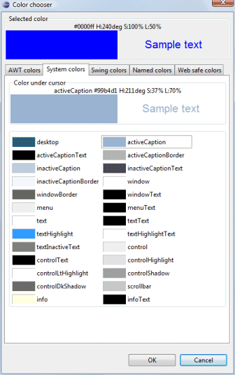
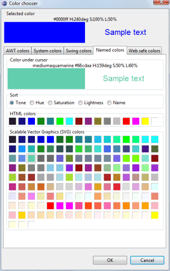
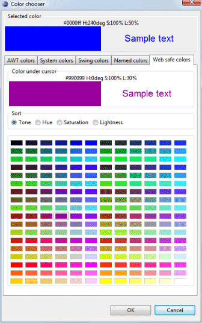
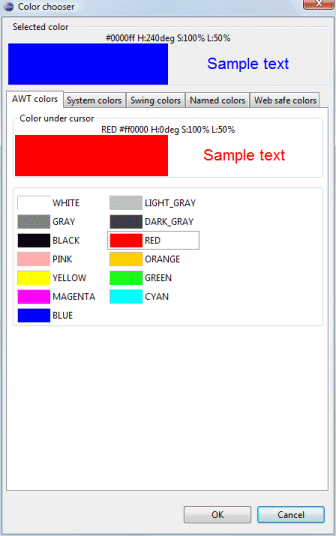
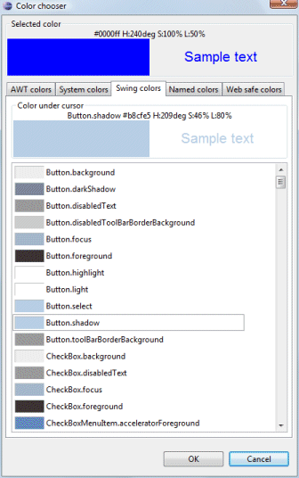

Click the
 button
to access the Color Chooser and select a color.
button
to access the Color Chooser and select a color.
The Color Chooser has multiple pages where colors may be selected. The current color property value is shown at the top and the currently selected color is shown below that. Standard color pages include System colors, Named colors, and Web safe colors. Named colors and Web safe colors may be sorted by Tone, Hue, Saturation or Lightness.
 

When designing Swing windows, two other pages are available: AWT colors and Swing colors.
 